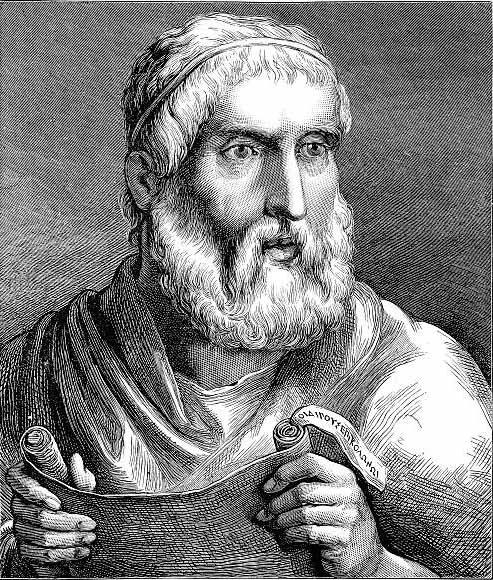

Amaneceres y atardeceres en Atenas
Nos centraremos en el tema de la condena a muerte que, a inicios del siglo IV a.C., Atenas impone a uno de sus más famosos ciudadanos: Sócrates. Y veremos el temple con que el filósofo asume la sentencia y acepta su muerte. Una muerte que sella, corona unaidentidad honrosamente comprometida con su tarea filosófica/política. Pensaremos en ese Sócrates recreado admirativamente por Platón. Será entonces un "Sócrates conjetural". Veremos la indignación antidemocrática de Platón y la solución que propone para que no haya ya más injusticias: el filósofo rey o el rey filósofo. También mencionaremos la famosa caracterización del hombre como animal político hecha por Aristóteles.
Ver másHéroes y heroínas trágicos
El destino y cómo enfrentarlo. Dos personajes inmortales del poeta trágico Sófocles: Edipo (y su relectura por Freud y Foucault); Antígona, que orgullosamente asume enfrentar a los atropellos del poder, que asume plenamente el haber cometido "mi crimen piadoso". Debatiremos quiénes pueden ser dos Antígonas de nuestra época. Dos ejemplos: Rosa Parks enfrenta a las normas blancas; Evita es bandera de lucha de sus "cabecitas negras".
Ver másSi la tierra tiembla bajo tus pies
Exposición crítica de quienes se presentan como los guardianes de la República amenazada. Y piden la sangre de los defensores de los derechos del pueblo. Cicerón y su retórica de "¡Oh tiempos! ¡Oh costumbres!". Mientras exige penas capitales. Contraste con un héroe político militar como Julio César. Un debate acerca de las razones de la filosofía estoica cuando el poder político se desquicia. Séneca ante Nerón.
Ver másElogio de las Revoluciones

Luces y sombras: Revolución: Francesa, de Mayo, la del 1848, la Rusa... Marx, Mariano Moreno, Walter Benjamin. Debates argentinos: ¿Sarmiento o José Hernández? Cómo se escribe la historia argentina. Dos ejemplos: la Semana Trágica (enero de 1919) repensada como Semana Infame; el 16 de junio de 1955, bombardeos a Plaza de Mayo y la noche de los incendios de las iglesias (Horacio González lee a Félix Luna). Conclusión: los conflictos tienen que ser repensados. Una y otra vez. Y la tarea de pensarlos es ineludiblemente propia. ¡Atrévete a pensar! (la exigencia de Kant nos interpela hoy y siempre).
Ver más